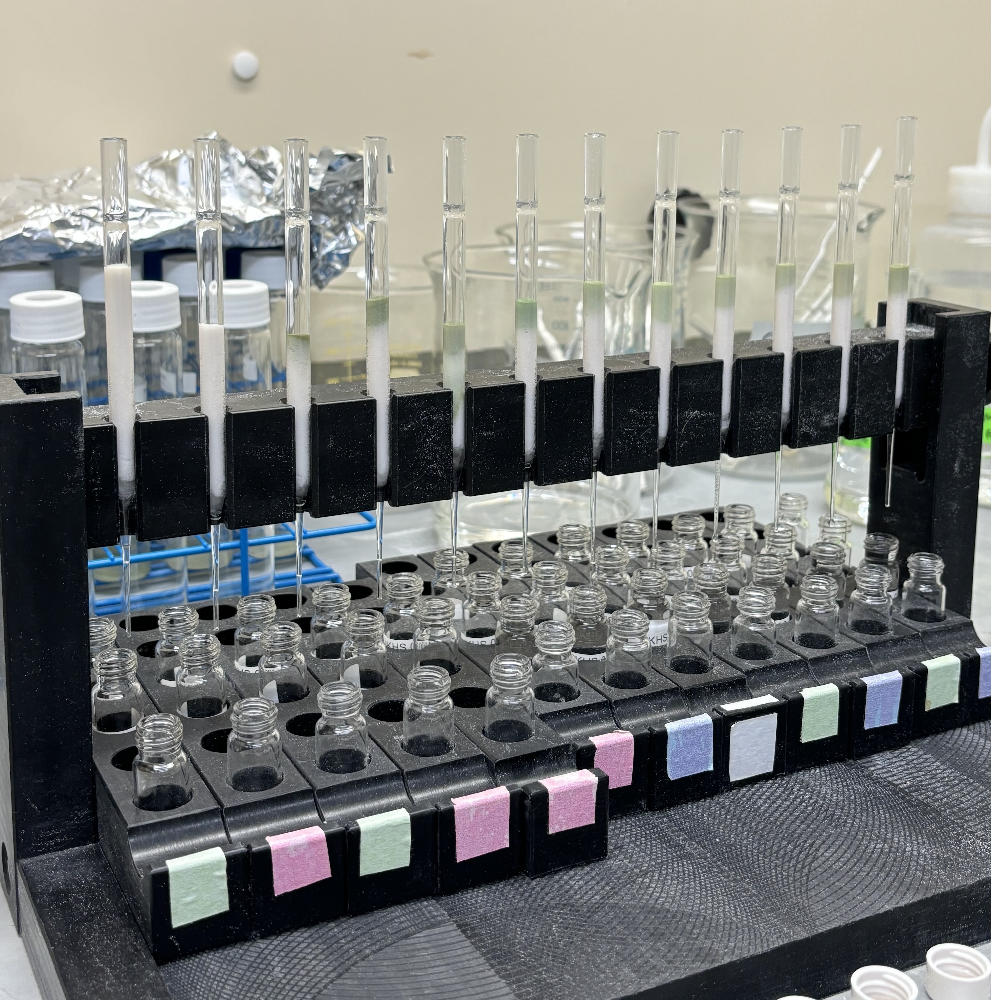

I am a PhD candidate in Geosciences at UMass-Amherst, focusing on reconstructing past climate variability using organic geochemistry and lake sediment cores.
Currently, I am working on the Holocene temperature and hydrological reconstruction of Lake Issyk-Kul, Central Asia, using GDGTs, n-alkanes, alkenones-based proxies. I am interested in understanding how westerlies, glacier meltwater, and climate forcings have shaped regional climate through the Holocene.
My research aims to provide high-resolution paleoclimate data to improve our understanding of regional hydroclimate variability and inform future climate predictions.
Projects

👆 Click to learn more
×
Brewing Climate Records in the UMass-Amherst EGCS Biogeochem Lab
Layering what looks like matcha latte 💚 (but isn’t!) while fractionating apolar, ketone, and polar extracts via column chromatography to analyze n-alkanes, alkenones, and GDGTs from Lake Issyk-Kul sediment cores.
These fractions will be run on GC-MS and HPLC-MS to reconstruct Holocene climate variability in arid Central Asia.
✏️Temperature and Hydroclimate Variability in Mid-Latitude Arid Central Asia During the Past 13,600 years: A Multi-Proxy Investigation of Issyk-Kul (Kyrgyzstan)
NSF Award #: 2202902
Role: Research Assistant
👆 Click to learn more
×
Heeyeon is surrounded by Arctica islandica 🐚!
Using a carbide drilling bit, we micro-milled 8-10 samples per year for seasonal variation of d18Oshell and annual samples (as 80-300 ug).
✏️Collaborative Research: Using Multi-Proxy Paleo Data to Constrain Natural and Anthropogenic Hydrographic Variability in the Gulf of Maine System over the Last 250 Years
Period: Aug 2021 — May 2023
NSF Award #: 2028197
Role: Research Assistant
Thesis: Using clam-based stable isotopes and growth histories to reconstruct the temporal oceanographic variability in the Southern Mid-Atlantic bight over the last 185 years